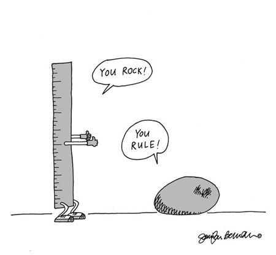

Overview
In this presentation we will cover the following:
- We will learn about object oriented programming.
- We will define prototypal inheritance, and look at how it differs from classical inheritance.
- We will look at the two ways in which prototypal inheritance is used in JS.
- We'll weigh the pros and cons of these patterns.
- We will take a look at some examples.
- Then, we will finish up with an overview of the Datahall's page
OOP for you and me
- Object Oriented Programming:
- Programming model organized around objects rather than actions, and data rather than logic.

OOP, put simply, is the use of objects to encapsulate state.
Objects inherit methods and properties from parent objects/classes, forming a chain of inheritance.
Example of the Levels of Abstraction 
Abstraction - A general concept formed by extracting common features from specific examples
Generalization - An abstraction of a more specific abstraction.
Classical Inheritance vs Prototypal Inheritance
In classical object-oriented programming languages, instances inherit from a blueprint (the class), and create sub-class relationships:
Objects are abstractions (only one level removed from the instance) and classes are generalizations (two or more levels removed).
In prototypal object-oriented programming languages, however, we only have one type of abstraction: Objects.
If it is not the instantiated object, then the object is either an abstraction or a generalization of it.
When an object inherits properties and methods from another object, the object it inherits from is called the prototype

What is so prototypical about JavaScript?
Within JS's prototypal paradigm there are two patterns of construction: prototypal and constructor
In JavaScript, there are no classes. Everything is an object. Even the base data types like "String" and "Number" are instances of objects. This is how JavaScript's inherent methods work.
In prototypal, you add methods and properties on the prototype when you want instances of an object to inherit those methods and properties. By doing this, you are cloning an existing object and extend it
The constructor pattern in JavaScript is the prototypal pattern inverted. You create a brand new object and then copy over properties and methods from other objects selectively.
Example of a Prototype
Pros & Cons
One of the most important advantages of prototypal inheritance is that you can add new properties to prototypes after they are created.
This allows you to add new methods to a prototype which will be automatically made available to all delegate objects of that prototype.
In JS you'll never hear about The Diamond Problem
JavaScript only allows objects to delegate to one other object. This means you need to extend it a little if you want Multiple Inheritance.
JavaScript is confusing, it's syntax was designed for Java developers. The constructor pattern does not appeal to the classical crowd.

Parasitic Combination Inheritance
Douglas Crockford is a senior JavaScript architect at PayPal, known for JSLint and JSMin, and for popularizing the JSON format.
He invented this little extension to JavaScript's Object.create method that allows for prototypal hierarchies:
You make prototype objects, and then...make new instances. Objects are mutable in JavaScript, so we can augment the new instances, giving them new fields and methods. These can then act as prototypes for even newer objects. We don't need classes to make lots of similar objects...Objects inherit from objects. What could be more object oriented than that?-Douglas Crockford
DataHalls Object Hierarchy
Polymorphism - objects can share the same interface (how they are accessed and used), while their underlying implementation of the interface may differ
Summary
- JavaScript is a prototype-based object oriented language. This is how it encapsulates state.
- There are only objects. The prototype of an object is just another object.
- You can either extend inherent JavaScript prototypes or make new ones.
- JavaScript is confusing syntactically, but it has some powerful features, like adding properties and methods at runtime
- Parasitic Combination Inheritance allows us to make our own prototypal inheritance structures.